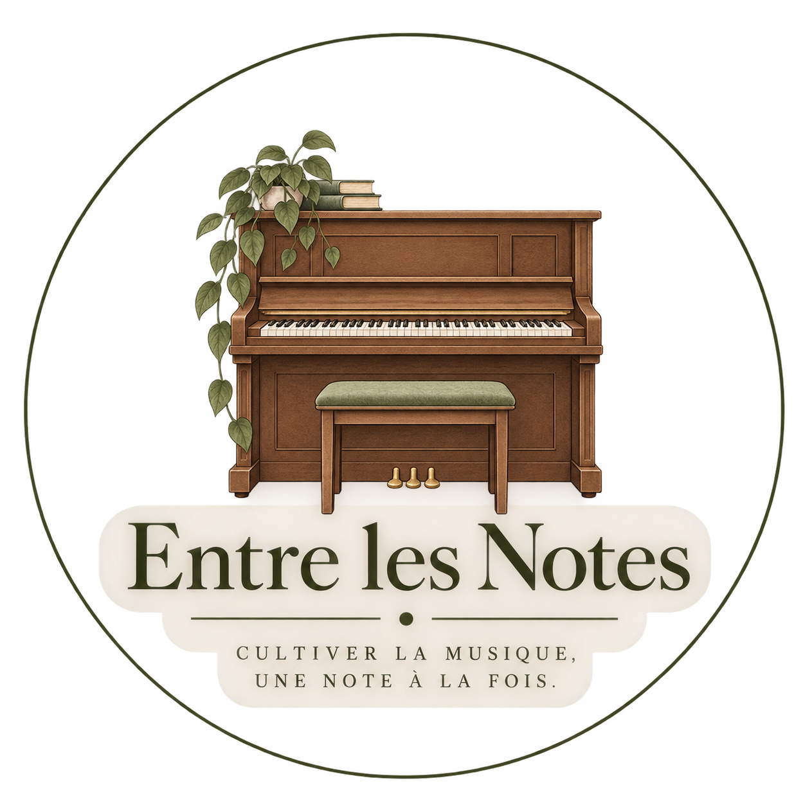
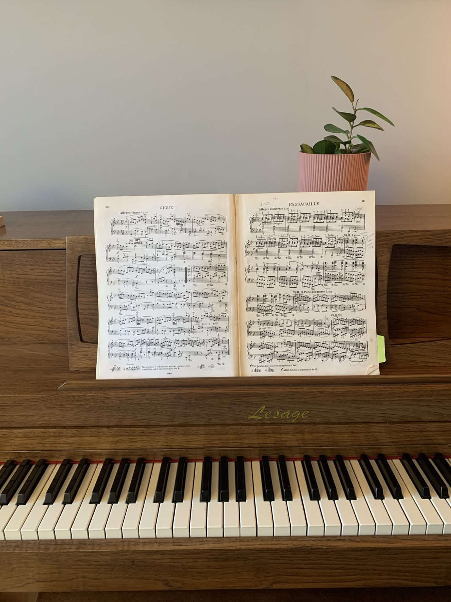

Découvrir les coursACCUEIL
Chaque élève possède son propre rythme de croissance. Certains commencent leur aventure musicale avec une petite graine de curiosité. D'autres arrivent avec quelques années de piano derrière eux et souhaitent aller plus loin.
Les cours sont un espace où chacun peut développer sa musicalité à son rythme, dans un environnement bienveillant et stimulant.
COURS
Les cours sont donc adaptés à son niveau, à ses intérêts et à son rythme, que l'on commence tout juste le piano ou que l'on souhaite approfondir ses connaissances musicales.
Au fil des cours, nous explorons différents aspects de la musique et du piano, notamment :
🎵 La méthode et le répertoire — apprendre à jouer des pièces adaptées au niveau et aux goûts de l'élève.
🎼 La lecture de notes — développer progressivement l'aisance à lire et à comprendre une partition.
📖 La théorie musicale — comprendre les notions qui se cachent derrière la musique que l'on joue.
🎹 La technique pianistique — travailler la posture, les mouvements, les doigtés et les différentes façons de faire sonner le piano.
👂 L'écoute et la musicalité — apprendre à écouter, à nuancer et à donner sa propre expression à la musique.
✨ Et surtout, le plaisir de jouer — parce que la musique est aussi un espace pour découvrir, créer et s'exprimer.
L'objectif n'est pas de faire entrer chaque élève dans la même méthode, mais de trouver le chemin qui lui convient.
À PROPOS

Bonjour ! Je me nomme Kaïlane et je suis professeure de piano à Granby.
Je pratique le piano depuis plus de dix ans, avec ma merveilleuse enseignante Camille Lacasse (école de piano « À votre portée »). J'ai toujours été fascinée par la musique classique : j'aime comprendre le contexte historique, en apprendre davantage sur le compositeur et ce qui se passait dans sa vie au moment de créer une partition.
Bien que j'enseigne maintenant depuis 3 ans, je continue mes propres cours de piano. Pourquoi ? Parce que j'ai une soif d'apprendre, de m'améliorer, et d'offrir le meilleur à mes élèves. En continuant mon apprentissage, je peux en apprendre toujours plus à mes élèves.
TARIFS
30 minutes / 20 $
45 minutes / 25 $
1 heure / 30 $
CONTACT
Remplissez le formulaire ci-dessous afin de me parler de votre projet musical, de vos disponibilités et de vos objectifs. Je communiquerai ensuite avec vous afin de discuter de vos besoins et de vérifier les possibilités d'horaire.
Au plaisir de pianoter avec vous!